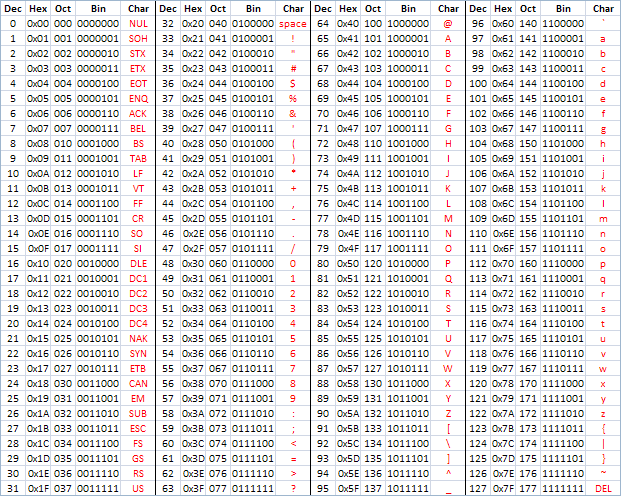

Software
Information which operates a computer, instructions dictated by code.
- operating system
- applications
- scripts
Input & Output
Information provided to a computer which is then processed is input.
The results generated by a computer after it processes information is output.
Binary
A numeral system represented by ones (1) and zeros (0).
This is the most basic 'language' a computer understands.
Binary represents on-and-off electrical states which allow processors to work.
Types of Information
For a computer to be valuable, we must give it information to process.
There are four types of data computers work with:
- numeric
- character-based
- multimedia (audio / visual)
- instructional
Numeric Information
A sequence of binary can represent numbers in decimal (base 10), the numeric system we use daily.
| Binary | 0 | 1 | 10 | 11 | 100 | 101 |
|---|---|---|---|---|---|---|
| Number | 0 | 1 | 2 | 3 | 4 | 5 |
There are only 10 types of people in the world: Those who understand binary and those who don't.
:}
Binary to Decimal
Converting binary to decimal provides us with numbers for:
- mathematical calculations
- a foundation for representing other information familiar to humans
Other Numeral Systems
If we can convert binary (base 2) to decimal (base 10), we can also convert these binary sequences to:
- octal (base 8)
- hexadecimal (base 16)
These were used by programmers more frequently in the 1960s, 1970s and 1980s due to memory limitations, and are still in use today.
Character-Based Information
Text is the best method of communication which allows humans to exchange information with a computer.
We work with a character set, which maps the letterforms of a language and combinations of keystrokes to a binary sequence.
ASCII
The standard character set used by computers is known as the American Standard Code for Information Interchange or ASCII (ask-key).
- 128 characters — letters, numbers, punctuation
- binary ranges from 0000000 to 1111111
- includes 'control' characters
In ASCII, 1110111 1100101 1100010 represents the word "web".
ASCII Table
Character values displayed in decimal, hexadecimal, octal and binary.
Instructing Computers
When we want to give a computer instruction, our sequence of human-readable characters become strings.
Combinations of these strings form instructions.
These compound instructions become programs.
The syntax (words, punctuation) we use to write programs represents a language.
Programming Languages
A programming language describes a specific set of words, punctuation and syntax used to tell a computer what to do.
Languages can be categorized based on human readability or how a computer processes them.
Low-Level Languages
- may be written in machine code format
- directly readable by a microprocessor
- code compiles to several (less than 10 lines) of machine code
High-Level Languages
- written in a syntax closer to human languages
- compiled or interpreted
- code may compile to hundreds or thousands of machine code
Compiled Languages
Programs written in compiled languages are translated into machine code (binary) before they can be run.
Examples:
- C
- C++
- Go
- Java
Interpreted Languages
Programs written in interpreted languages are translated into machine (binary) line-by-line and executed immediately.
Interpreted languages are sometimes referred to as scripting languages.
Examples:
- JavaScript
- Python
- Ruby
What is code?

Journalist and coder Paul Ford wrote 38,000 words, a double issue for Bloomberg Businessweek in June 2015 all about code (the noun) and the culture of those who code (the verb).
You can read it online. And you should.